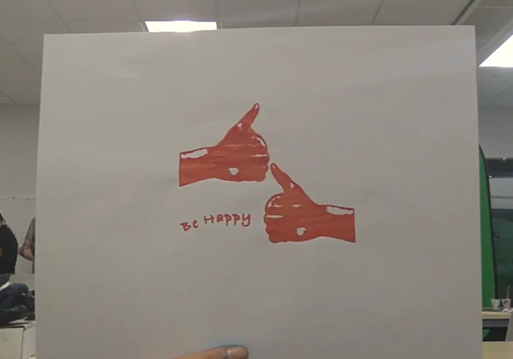
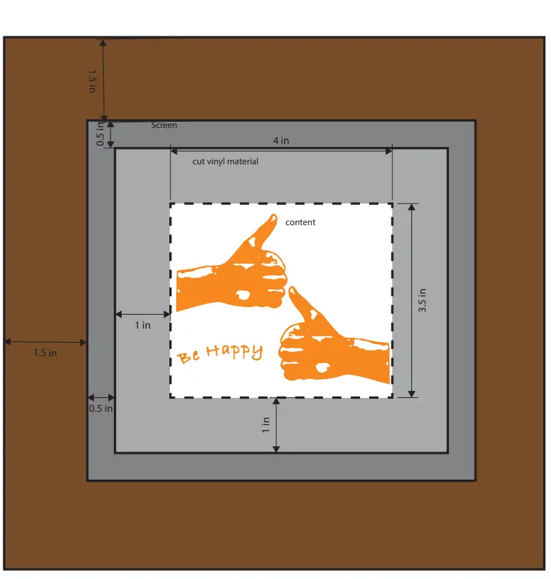

In my screenprinting project, "Our Shared Canvas", I was shown the importance and meaning behind expressing yourself. In this project, I learned basic things like expressing my feelings in art, and also complicated things like how to manage your art in technology. This project was meant to show our opinions on the world and, more specifically, what we would do to make an impact on it. To make my art I first drafted my ideas on paper. Then, I projected my ideas onto Adobe Photoshop. Next, I printed my our art and basically glued it onto a screen. Finally, I printed my art onto different surfaces through our screenprint. On the computer, I learned about Adobe Premier Pro when I did my documentary of the project. Overall, I learned a variety of things in my screenprinting project, all of which were beneficial and exciting.
One 21st century skill that I exhibited in this project was the skill of "Citizenship and Responsibility". I learned the importance of expressing myself in the community that I live in, even if only in a simple way. Art was the expression that I found myself being attracted to. I learned how art can have a great impact on myself and those around me. I learned to exersize empathy and respect for everybody's perspectives on the world. I also worked towards helping the greater community with their need of having an uplifting attitude towards things. My art was a picture of a thumbs up. It was simple but it was enough to make an impact on the community, even if it was just to make somebody smile.


Back to Home Page